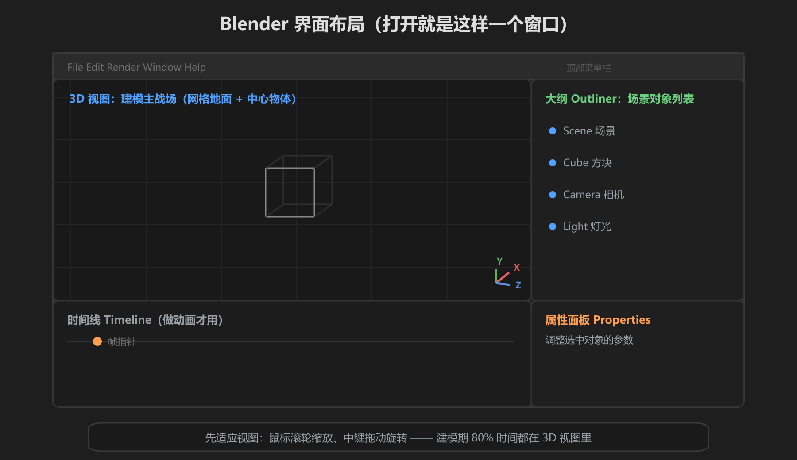
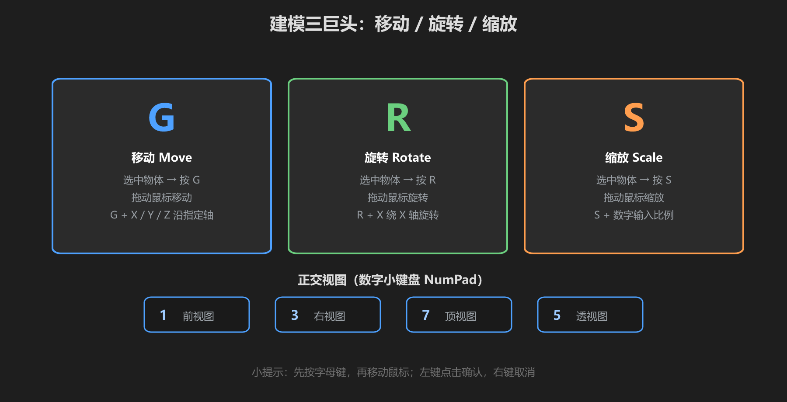

第 2 篇：Blender 基础操作 — 界面、选择、移动
打开 Blender 会看到一个「什么都要快捷键」的软件。别慌 —— 本篇只教你建模必须的几件事：认识界面、会选物体、会移动/旋转/缩放、会切视图。
1. 界面布局

图：Blender 默认界面 —— 重点是中间的 3D 视图
四个区域就够了：
| 区域 | 用途 | 建模期用吗 |
|---|---|---|
| 3D 视图 | 建模主战场，操作物体的地方 | 天天用 |
| 大纲 Outliner | 场景里的对象列表 | 经常看 |
| 属性面板 | 调整选中对象的参数（含修改器） | 经常用 |
| 时间线 | 做动画用的 | 本教程不用 |
2. 选择模式与选择操作
Blender 有两种模式：对象模式（操作整个物体）和编辑模式（操作顶点/边/面，按 Tab 切换）。先掌握对象模式：
- 单击选中：左键点击物体，被选中物体带橙色描边
- 加选：按住
Shift+ 左键点击，可同时选中多个 - 全选：按
A全选，再按Alt+A取消 - 框选：按
B后拖出矩形框选
3. 移动 / 旋转 / 缩放（最重要的三个键）

图：G 移动、R 旋转、S 缩放，加 X/Y/Z 锁定轴向
- 选中物体，按
G（Grab 移动），移动鼠标，左键确认 - 按
R（Rotate 旋转），转动鼠标，左键确认 - 按
S（Scale 缩放），拖动物体大小，左键确认 - 想沿某个轴：按
G后按X，就只沿 X 轴移动；R/S 同理 - 想精确输入：按
S后直接打数字如0.5，回车确认
万能取消键：任何操作按错方向，按右键或Esc取消，不会损坏模型。大胆试，不会弄坏东西。做错了就Ctrl+Z撤销。
4. 视图控制：正交 vs 透视
建模时常用正交视图（平行投影，不近大远小，方便对齐）和透视视图（正常视角）：
- 数字小键盘
1= 前视图，3= 右视图，7= 顶视图 5= 切换 正交/透视Ctrl+1/3/7是对应反方向视图（后/左/底）- 笔记本没有小键盘？菜单栏 View → Viewpoint 里有，或开启「模拟数字小键盘」设置
滚轮习惯：鼠标中键按住 = 旋转视图，滚轮 = 缩放。这两个操作几乎每 10 秒用一次，先在默认场景里滚几分钟适应它，比记十个快捷键都值。
学前检查清单
- 能说出 3D 视图、大纲、属性面板分别在哪
- 会用左键选物体、Shift+左键加选
- 能熟练用 G / R / S 移动、旋转、缩放物体
- 会用数字键 1/3/7 切换正交视图，5 切换透视
- 遇到操作错误知道用右键取消、Ctrl+Z 撤销